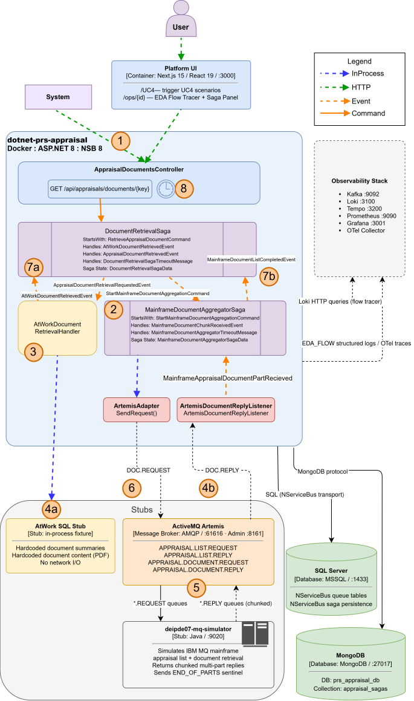

Content-based routing on DocumentKey format. RiskID keys route to WCF. Numeric keys route to DEIPDE07 IBM MQ with multi-message chunk aggregation.
GET /api/appraisals/document?documentKey=DOC_RiskID_I_TEST001&sourceSystem=AtWork
or
documentKey=10000000001&sourceSystem=Mainframe
· Flow Tracer: localhost:3000/ops/{correlationId}

The DocumentKey returned by GetAppraisalList encodes the source system. No lookup table. No configuration file.
| Key Format | Example | Route | Mechanism |
|---|---|---|---|
Contains _RiskID_ |
DOC_RiskID_I_TEST001 |
AtWork / RiskID System | Single call to AtWork gateway. Response is a base64-encoded PDF. |
| Numeric only | 10000000001 |
DEIPDE07 IBM MQ | Fire-and-forget MQ request. Multiple reply chunks reassembled into one PDF. |
Each MQ reply is exactly 64 bytes of base64-encoded PDF content with EBCDIC newlines appended. A position indicator on each message (N of M) tells the aggregator the total expected count.
MqDocumentChunkAggregator collects chunks in order, strips EBCDIC artifacts (0x0D 0x25), and concatenates into the final PDF byte stream.
A 10–20 MB production document may produce hundreds of chunks.
The final message carries endOfMessage=true. The aggregator publishes MqDocumentRetrievedEvent with the assembled document bytes.
If DEIPDE07 does not complete within 30 seconds the saga aborts cleanly. A partial document is not returned — it would be corrupt. The log entry includes how many chunks were received before the timeout.
| Document Key | Route | Expected Result |
|---|---|---|
DOC_RiskID_I_TEST001 |
AtWork / RiskID | PDF returned (Insured Full Appraisal). Single AtWork call. Route decision logged as AtWorkRiskID. |
DOC_RiskID_A_TEST002 |
AtWork / RiskID | PDF returned (Agent Appraisal Report). Single AtWork call. Different inspection type. |
10000000001 |
DEIPDE07 MQ | PDF assembled from chunks. Position indicators visible in Flow Tracer. Route decision logged as DEIPDE07MQ. |
10000000002 |
DEIPDE07 MQ | PDF assembled from chunks (Exterior Appraisal). Same MQ path, different document. |
ContentRouter.Decision correlationId=xxx documentKey=10000000001 route=DEIPDE07MQ DEIPDE07.MQ.Send correlationId=xxx queue=APPRAISAL.DOC.REQUEST DEIPDE07.Chunk.Received correlationId=xxx chunkIndex=1 position="1 of N" DEIPDE07.Chunk.Received correlationId=xxx chunkIndex=2 position="2 of N" DEIPDE07.Chunk.Received correlationId=xxx chunkIndex=N position="N of N" endOfMessage=true DEIPDE07.Aggregation.EBCDICStrip correlationId=xxx charsRemoved=N DEIPDE07.Aggregation.Complete correlationId=xxx totalChunks=N assembledSizeBytes=N DocumentRetrieved correlationId=xxx sourceSystem=Mainframe sizeBytes=N
ContentRouter.Decision correlationId=xxx documentKey=DOC_RiskID_I_TEST001 route=AtWorkRiskID AtWork.Retrieval.Started correlationId=xxx documentKey=DOC_RiskID_I_TEST001 AtWork.Retrieval.Completed correlationId=xxx durationMs=120 sizeBytes=4200 DocumentRetrieved correlationId=xxx sourceSystem=AtWork sizeBytes=4200